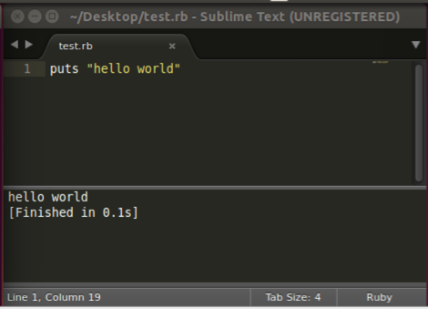

Ruby + Rails
Hackdestino
Slides available at http://192.168.0.102:8000 or github.com/andruby/RailsDay
Agenda
- Introduction to Ruby on Rails
- Good code
- Ruby 101
- BYO Twitter
Introduction to
Ruby on Rails
Why?
- Ruby
- DSL for writing web applications
- Large community → lots of libraries
- 100% Open Source (MIT License)
Many common web programming tasks, such as generating HTML, making data models, and routing URLs, are easy with Rails, and the resulting application code is concise and readable.
Who's using it?
- 37 Signals
- GitHub
- Shopify
- Scribd
- Disney
- Hulu
- Groupon
- Bloomberg
- Airbnb
- SoundCloud
- Square
- Slideshare
- Penny Arcade
MVC
Model View Controller

I have two rules for
Good code
Good code is code that is easy to change
- Don't Repeat Yourself
- Single Responsibility Principle
- Loosely coupled systems
Write code for humans first
(for computers second)
- Clarity, maintenance, adaptability > runtime performance
- Developement speed > runtime performance
Ruby 101
Ruby is a dynamic, object-oriented, general purpose language designed for programmer productivity and fun
IRB
IRB is the Interactive Ruby Bash.
Start it from a console terminal with the irb command.
$ irb
irb(main):001:0> RUBY_VERSION
=> "2.1.2"
Sublime Text
ctrl+shift+b to run a saved .rb file
BYO Twitter
With railstutorial.org
RailsTutorial.org
We follow chapters 3 to 11 with these considerations:
- Rails 4.1 vs 4.0
- Skip testing for speed
- Git and Heroku are optional but encouraged
Chapter 3
Mostly Static Pages
Generating our rails app skeleton
rails new sample_app --skip-test-unit
cd sample_app
Rails Folder Structure
| app/ | Core application code including Models, Views, Controllers |
|---|---|
| app/assets/ | Application assets (css, js, and images) |
| bin/ | rails and rake executables |
| config/ | Configuration |
| db/ | Database and migrations |
| public/ | Data accessible to the public |
| test/ | Directory for (unit, integration) tests |
| vendor/ | Third-party code |
| Gemfile | List of external gem libraries used |
| Gemfile.lock | Generated by Bundler with all gem versions |
Updated Gemfile
source 'https://rubygems.org'
ruby '2.1.2'
gem 'rails', '4.1.4'
gem 'sass-rails', '~> 4.0.3'
gem 'uglifier', '>= 1.3.0'
gem 'coffee-rails', '~> 4.0.0'
gem 'jquery-rails'
gem 'turbolinks'
gem 'jbuilder', '~> 2.0'
group :doc do
gem 'sdoc', '~> 0.4.0'
end
group :development do
gem 'sqlite3'
gem 'spring'
end
group :production do
gem 'pg'
gem 'rails_12factor'
end
Bundler
a package manager for Ruby Gems
Avoid sudo in the VM with the --path option
bundle install --without production --path vendor/bundleNew in Rails 4.1:
bin/rails
bin/rake
chapter 6
Modeling the users
Active Record
- a host of methods for creating, saving, and finding data objects
- no need to know SQL
Migration
- provided by rails
- create new columns in SQL
- update SQL
create user
- name
create controller(in chapter 5)
rails generate controller Users newcreate model
rails generate model User name:string email:string
invoke active_record
create db/migrate/[timestamp]_create_users.rb
create app/models/user.rb
invoke rspec
create spec/models/user_spec.rbcreate db model
bin/rake db:migraterevert db model
bin/rake db:rollbackcreate your first user, from the console
bin/rails c- new
- save
- create
- destroy
- find
- update
- ...
Validations
class User < ActiveRecord::Base
validates :name, presence: true, length: { maximum: 50 }
validates :email, presence: true, format: { with: VALID_EMAIL_REGEX },
uniqueness: true
before_save { self.email = email.downcase }
VALID_EMAIL_REGEX = /\A[\w+\-.]+@[a-z\d\-.]+\.[a-z]+\z/i
end
bin/rails cadd validation on db level
rails generate migration add_index_to_users_email
class AddIndexToUsersEmail < ActiveRecord::Migration
def change
add_index :users, :email, unique: true
end
end
bin/rake db:migrateadding a secure password
class User < ActiveRecord::Base
.
.
.
has_secure_password
end rails generate migration add_password_digest_to_users password_digest:stringbin/rails cchapter 7
Sign up
Skip
chapter 8
Sign in/sign out
create session controller
rails generate controller Sessionsroutes
SampleApp::Application.routes.draw do
resources :users
resources :sessions, only: [:new, :create, :destroy]
root 'static_pages#home'
# get '/signup' => 'users#new'
get '/signin' => 'sessions#new'
delete '/signout' => 'sessions#destroy'
end
the session controller
class SessionsController < ApplicationController
def new
end
def create
end
def destroy
end
end
app/views/sessions/new.html.erb
<% provide(:title, "Sign in") %>
Sign in
<%= form_for(:session, url: sessions_path) do |f| %>
<%= f.label :email %>
<%= f.text_field :email %>
<%= f.label :password %>
<%= f.password_field :password %>
<%= f.submit "Sign in", class: "btn btn-large btn-primary" %>
<% end %>
New user? <%= link_to "Sign up now!", signup_path %>
values are given to create function in "params"
def create
user = User.find_by(email: params[:session][:email].downcase)
if user && user.authenticate(params[:session][:password])
# Sign the user in and redirect to the user's show page.
sign_in user
redirect_to user
else
# Create an error message and re-render the signin form.
end
end
create SessionsHelper in app/helpers/sessions_helper.rb
module SessionsHelper
def sign_in(user)
remember_token = User.new_remember_token
cookies.permanent[:remember_token] = remember_token
user.update_attribute(:remember_token, User.digest(remember_token))
self.current_user = user
end
def current_user=(user)
@current_user = user
end
def current_user
remember_token = User.digest(cookies[:remember_token])
@current_user ||= User.find_by(remember_token: remember_token)
end
end
sign out
homework
chapter 9
homework
chapter 10
user microposts
generate miropost
rails generate model Micropost content:string user_id:integer
class CreateMicroposts < ActiveRecord::Migration
def change
create_table :microposts do |t|
t.string :content
t.integer :user_id
t.timestamps
end
add_index :microposts, [:user_id, :created_at]
end
end
add validation
do some tests in the command line
request all the posts from a certain user